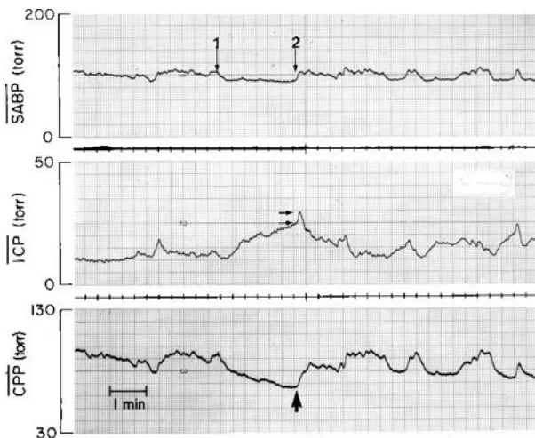
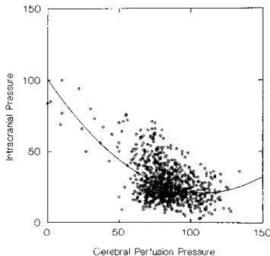
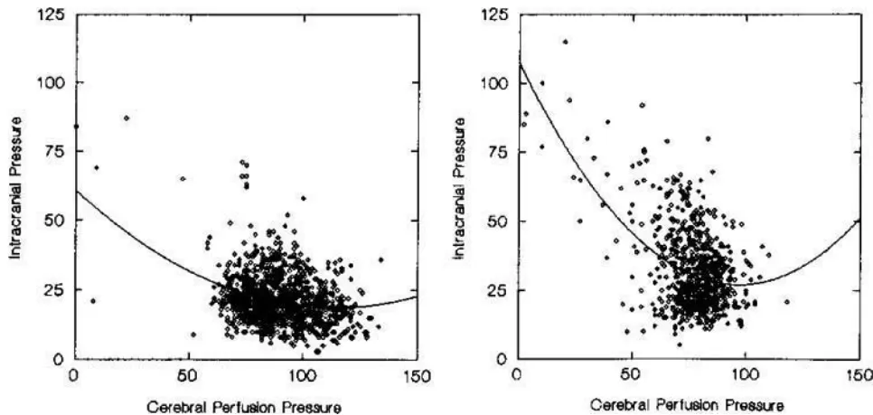

MICHAEL J. ROSNER, M.D., SHEILA D. ROSNER, R.N., M.S.N.,
AND ALICE H. JOHNSON, R.N., B.S.N.
Division of Neurological Surgery, Department of Surgery, University of Alabama at Birmingham,
Birmingham, Alabama
✓ Early results using cerebral perfusion pressure (CPP) management techniques in persons with traumatic brain injury indicate that treatment directed at CPP is superior to traditional techniques focused on intracranial pressure (ICP) management. The authors have continued to refine management techniques directed at CPP maintenance.
One hundred fifty-eight patients with Glasgow Coma Scale (GCS) scores of 7 or lower were managed using vascular volume expansion, cerebrospinal fluid drainage via ventriculostomy, systemic vasopressors (phenylephrine or norepinephrine), and mannitol to maintain a minimum CPP of at least 70 mm Hg. Detailed outcomes and follow-up data bases were maintained. Barbiturates, hyperventilation, and hypothermia were not used.
Cerebral perfusion pressure averaged mm Hg; ICP averaged mm Hg; and mean systemic arterial blood pressure averaged mm Hg. Cerebrospinal fluid drainage averaged cc per day. Intake ( cc per day) was carefully titrated to output ( cc per day); mannitol averaged g per day. Approximately 40% of these patients required vasopressor support.
Patients requiring vasopressor support had lower GCS scores than those not requiring vasopressors ( vs. , respectively). Patients with vasopressor support required larger amounts of mannitol, and their admission ICP was versus mm Hg for the nonvasopressor group. Although the death rate in the former group was higher, the outcome quality of the survivors was the same (Glasgow Outcome Scale scores vs. ). Surgical mass lesion patients had outcomes equal to those of the closed head-injury group.
Mortality ranged from 52% of patients with a GCS score of 3 to 12% of those with a GCS score of 7; overall mortality was 29% across GCS categories. Favorable outcomes ranged from 35% of patients with a GCS score of 3 to 75% of those with a GCS score of 7. Only 2% of the patients in the series remained vegetative and if patients survived, the likelihood of their having a favorable recovery was approximately 80%. These results are significantly better than other reported series across GCS categories in comparisons of death rates, survival versus dead or vegetative, or favorable versus nonfavorable outcome classifications (Mantel-Haenszel , ). Better management could have improved outcome in as many as 35% to 50% of the deaths.
KEY WORDS • cerebral perfusion pressure • intracranial pressure •
traumatic brain injury • therapy
IN the process of better understanding Lundberg's Plateau and B wave phenomena, a general model evolved that could be used to predict the appearance and behavior of many intracranial pressure (ICP) events and that provided a theoretical basis for the management of ICP problems in general.58,61 We have termed this model the "complex vasodilatory/vasoconstriction cascade"29,57,60 (Figs. 1–3). By stabilizing cerebral perfusion pressure (CPP) at higher levels, we found that ICP could be better controlled without cerebral ischemia.
Early results using active treatment of CPP as the primary therapeutic end point in the management of patients with traumatic brain injury (TBI)64 were encouraging. Importantly, we demonstrated that CPP could be iatrogenically elevated by inducing systemic hypertension without potentiating mortality from vasogenic edema and uncontrolled intracranial hypertension.
Subsequently, techniques have evolved from this model (Figs. 1 and 3) that form a coherent approach for managing the patient with TBI and have led to testing two closely related hypotheses: 1) management of CPP as the primary goal of therapy will yield lower mortality than that achieved with traditional, ICP-based techniques; and 2) management of CPP will result in higher Glasgow Outcome Scale (GOS)24 scores than traditional methods of therapy.
Traumatic brain-injured patients above the age of 14 years who were admitted to the hospital with postresuscitation Glasgow Coma Scale (GCS)79 scores of 7 or below
FIG. 1. The complex vasodilatory cascade model illustrating how reducing cerebral perfusion pressure (CPP) (systemic arterial blood pressure (SABP) – intracranial pressure (ICP)) may stimulate cerebral autoregulatory vasodilation, with an increase in cerebral blood volume (CBV) and ICP. If the SABP component remains unchanged, CPP will further decrease and the cycle will continue until the vasodilation is maximum or an SABP response occurs (see Fig. 2). The cascade may also be initiated at any point; for example, hypoxemia may stimulate cerebral vasodilation and initiate the cascade. Drugs, dehydration, or ventilator settings affecting the systemic blood pressure may stimulate the cascade from the systemic side. CSF = cerebrospinal fluid; CMR-O2 = cerebral metabolic rate for oxygen.

FIG. 2. Upper: Trace illustrating the reduction in cerebral perfusion pressure (CPP) stimulated by a spontaneous 15 mm Hg decrease in systemic arterial blood pressure (SABP) (1). The intracranial pressure (ICP) rose and further lowered the CPP because the SABP did not change; the process continued until the CPP increased as a result of the SABP's return to 100 mm Hg (2). This is an example (from 1 to 2) of the self-sustaining vasodilatory cascade effect. Center: The initial passive increase in ICP (termination spike T, twin horizontal arrows) before the ICP decreased, which represents the latent period of cerebral pressure autoregulation. Lower: The "ischemic" threshold for the A and B waves was between CPP at 60 to 70 mm Hg (large arrow), a value useful in selecting a minimum CPP (in this case above 70 mm Hg). However, the lowest ICP consistently occurred at a CPP of 85 to 90 mm Hg, which would be more appropriate as an optimal or "target" CPP as opposed to a minimal value. The selection of optimal CPP values is dynamic. These relationships change as brain injury evolves and both higher and lower optimal CPP can be identified.
FIG. 3. The "complex vasoconstriction cascade" model forms a general therapeutic model illustrating the role of high cerebral perfusion pressure (CPP) as a vasoconstrictor intracerebral pressure (ICP)-reducing stimulus. This model shows how vasoconstriction may be initiated at the systemic level: fluid loading red cell transfusion or the vascular volume increase brought about by mannitol is potentially effective at the systemic level. Mannitol may also stimulate the cascade primarily at the cerebral level by reducing viscosity, improving O2 delivery, and allowing vasoconstriction, which illustrates the utility of the model in understanding some of the complex effects of mannitol and other agents. The models also highlight and explain paradoxical effects such as those of the barbiturates. Pentobarbital may reduce the cerebral metabolic rate for oxygen (CMR-O2) and result in vasoconstriction with lower ICP. However, pentobarbital may significantly depress systemic arterial blood pressure (SABP) and lower CPP. The net effect of the opposing stimuli may be an increase in ICP or no net ICP change. If net dehydration following mannitol administration results in decreased SABP and/or hemoconcentration with increased viscosity, then mannitol "rebound" may well occur. CSF = cerebrospinal fluid; CBV = cerebral blood volume.
and who did not follow commands within 24 hours were included in this study. Hypoxemia, traumatic asphyxia, hypotension, and multiple systemic injuries were specifically included. When mortality and morbidity were expected to be determined by the neurological injury, patients undergoing celiotomy, major orthopedic repair, and other surgical procedures were managed in the Neuroscience Intensive Care Unit (NICU).
Nearly 100 variables were collected prospectively on a daily basis.64 Inspired oxygen (FiO2), positive end-expiratory pressure (PEEP), and packed red blood cells (pRBCs) were recorded for only the last 50 patients. Hourly physiological and laboratory variables were documented as daily averages of recorded values. The physiological variables recorded hourly were the value extant "on the hour." In cases in which uncertainty existed, the value recorded on the NICU flow sheet was cross-checked against the continuously recorded data from bedside monitors (Merlin; Hewlett-Packard Co., Atlanta, GA). Data were analyzed with the assistance of commercially available software (Systat 5.52 for Windows; Systat Inc., Evanston, IL).
General Monitoring. All patients underwent monitoring for central venous pressure and intraarterial blood pressure; most patients had pulmonary artery catheters. All
transducers were referenced to the external auditory meatus with the patient nursed flat and supine.26 Table 1 lists typical admission orders.
ICP Monitoring. Frontal ventriculostomy catheters coupled to an external transducer system with continuous oscilloscope displays of ICP and CPP were used for ICP monitoring. The ventriculostomy was connected to a manifold system (Medex Corp., Hillard, OH). Occasionally, a subdural catheter was placed as an initial or supplementary ICP monitor at the time of craniotomy closure prior to ventriculostomy.
Ventilation of Patients. All patients were intubated. Pancuronium bromide (2–4 mg every 30–60 minutes as required) or occasionally other neuromuscular blocking agents were used to induce pharmacological paralysis; these were administered until ICP–CPP was spontaneously maintained or required only cerebrospinal fluid (CSF) drainage. Tidal volume was initially set at 7 to 10 cc/kg (ideal weight) with a 14 to 16 breath per minute respirator rate. A minimum of 5 cm H2O PEEP and the minimum FiO2 required to obtain levels of arterial O2 saturation equal to or greater than 90% were used. Minute ventilation was adjusted to maintain a targeted PaCO2 of 35 mm Hg. Higher levels of PEEP were used freely to maintain arterial O2 saturation at 90(+)% . Airway temperatures were maintained at 37°C to improve secretion management.
Continuous hyperventilation was not used as a therapeutic modality.45,55,64 Acute hyperventilation via manual “bagging” was often used for periods of acutely increased ICP, but titrated against CPP to avoid hyperventilation-induced decreases in systemic arterial blood pressure (SABP) and CPP.
Fluid Management. The goal of fluid management was to establish and maintain euvolemia to moderate hypervolemia. Pulmonary capillary wedge pressures of 12 to 15 mm Hg and central venous pressure equivalent to 8 to 10 mm Hg were used as approximate guidelines. Most fluid orders were written “intake = output + K.” The “K” represents a constant to account for insensible losses; it could be increased further to allow gradual correction of underhydration or be made negative to allow gradual volume contraction.
Daily weights were obtained and used as an approximate indicator of total body water. This estimate was corrected for an expected catabolic weight loss of approximately 0.5 kg per day for each of the first 3 days and then 0.25 kg per day thereafter.42 Drug, fluid, ventilation, and hemodynamic calculations were based on “ideal” weight as estimated by the Dallas–Hall formula,83 or the actual body weight if it was lower than the expected “ideal.”
Patients who were well or excessively hydrated in terms of total fluid and Na+ were treated with albumin (25%), 12.5 to 25 g every 8 hours or more, to mobilize extravascular water into the vascular space. Packed red cells were frequently used as a volume expander, with absolute levels of hemoglobin and hematocrit being secondary to vascular volume as an indication for transfusion.
Electrolyte Management. Normonatremia and normo-
TABLE 1
Typical admission orders
| 1. | Vital signs every hour (systemic arterial blood pressure, intracranial pressure, cerebral perfusion pressure (CPP), cerebral venous pressure, pulmonary capillary wedge pressure) | |
| 2. | Intake + output every hour | |
| 3. | Daily weight | |
| 4. | Cardiac profile every 8 hours (include mixed venous sampling)* | |
| 5. | Maintain CPP at or above 70 mm Hg | |
| a. Drain ventriculostomy as needed; “pop-off” at 15 mm Hg | ||
| b. Titrate Levophed (4 mg/250 normal saline) to maintain CPP at or above 70 mm Hg* | ||
| c. If Levophed infusing, start dopamine 2 µg/kg per minute* | ||
| d. Maximum Levophed 0.2 µg/kg per minute unless otherwise ordered | ||
| 6. | Laboratory | |
| a. Complete blood count with platelets | } every 8 hours | |
| Electrolytes, creatinine, BUN, glucose | ||
| Urine Na+, K+ | ||
| Arterial blood gases | ||
| b. International normalized ratio (anticoagulant monitoring) | } every day | |
| Activated partial thromboplastin time | ||
| c. Lactic dehydrogenase | } every other day | |
| Serum glutamic oxaloacetic transaminase | ||
| Alkaline phosphatase | ||
| γ-Glutamyl transferase | ||
| 7. | Pancuronium, 2–4 mg administered intravenously every 0.5–1.0 hour | |
| 8. | Keep flat | |
| 9. | Lactated Ringer’s solution: intake = output + 50 cc per hour | |
| 10. | Tidal volume, 7 cc/kg, 5 cm H2O | |
| Synchronized intermittent mandatory ventilation, 14 breaths per minute | ||
| Positive end-expiratory pressure, 5 cm H2O |
* Use “ideal weight” for drug, fluid, and ventilator calculations. BUN = blood urea nitrogen.
kalemia were desired, but excessively positive sodium balance was avoided. Although the intravenous rate was established by output and hemodynamic parameters, fluid selection was based on spot urinary sodium and potassium concentrations obtained every 8 hours. For example, if the patient was normonatremic and excreting 60 to 80 mEq/L Na+, then 0.45% saline (75 mEq/L) was used for replacement. During the first 72 hours after admission, glucose solutions were avoided. Lactated Ringer’s solution and 0.9% NaCl were normally used for the first 24 to 48 hours after resuscitation to provide for third-space fluid losses.
Cerebral perfusion pressure was calculated as the arithmetic difference of the mean arterial pressure (MAP) and the mean ICP with both referenced to the level of the external auditory meatus with the patient flat. Initial orders (Table 2) required a minimum CPP of 70 mm Hg. Additional orders included the active drainage of CSF whenever CPP dropped below the 70-mm Hg set point. This CSF drainage was aggressively used to maximize CPP in the least toxic fashion. If CSF drainage was insufficient to maintain CPP, vasopressors were added (Table 2). The use of vasopressors was instituted early and aggressively.
TABLE 2
Basic characteristics of patient population*
| Factor | GCS Score (no. of patients) | Total | ||||
|---|---|---|---|---|---|---|
| 3 | 4 | 5 | 6 | 7 | ||
| characteristics of patients | ||||||
| mean age (yrs) | 28.5 ± 12.1 | 28.5 ± 12.8 | 25.7 ± 9.8 | 27.3 ± 10.6 | 30.9 ± 17.0 | 27.9 ± 12.3 |
| male/female ratio (percentage) | 87:13 | 84:16 | 63:37 | 66:34 | 80:20 | 74:26 |
| mean 1st ICP (mm Hg) | 28.6 ± 21.9 | 25.8 ± 21.6 | 21.1 ± 12.8 | 18.3 ± 11.0 | 19.9 ± 2.0 | 22.1 ± 15.8 |
| mean 1st CSF lactate (mmol) | 6.3 ± 5.2 | 2.9 ± 0.7 | 3.9 ± 1.7 | 3.9 ± 1.8 | 2.6 ± 1.0 | 4.0 ± 2.7 |
| cranial surgical mass lesion | 9 | 7 | 10 | 10 | 6 | 42 |
| pupillary abnormality—one | 2 | 5 | 3 | 5 | 4 | 19 |
| pupillary abnormality—both | 7 | 5 | 7 | 7 | 1 | 27 |
| mechanism of injury in patients | ||||||
| motor vehicle | 13 (57%) | 22 (71%) | 29 (85%) | 35 (78%) | 19 (76%) | 118 (75%) |
| assault | 3 (13%) | 2 (6%) | 2 (6%) | 2 (4%) | 2 (8%) | 11 (7%) |
| fall | 1 (4%) | 3 (10%) | 1 (3%) | 4 (9%) | 0 (0%) | 9 (6%) |
| miscellaneous blunt trauma | 4 (17%) | 1 (3%) | 0 (0%) | 3 (7%) | 1 (4%) | 9 (5%) |
| pedestrian | 2 (9%) | 2 (6%) | 2 (6%) | 0 (0%) | 2 (8%) | 8 (5%) |
| bicycle | 0 (0%) | 1 (3%) | 0 (0%) | 1 (2%) | 1 (4%) | 3 (2%) |
| total no. of patients | 23 | 31 | 34 | 45 | 25 | 158 |
* GCS = Glasgow Coma Scale; ICP = intracranial pressure; CSF = cerebrospinal fluid.
Administration of Vasopressors. Phenylephrine was the primary vasopressor used for the first 90 to 100 patients. Orders were written to titrate this drug to maintain CPP at or above 70 mm Hg. The dose of phenylephrine was 40 to 80 mg/ 250 ml 0.9% NaCl but was later adjusted according to electrolyte requirements. A ceiling dose of 4.0 µg/kg per minute was ordered. Over the last 24 months norepinephrine (4 mg/250 ml 0.9% NaCl) at a maximum dosage of 0.2 to 0.4 µg/kg per minute has become the standard vasopressor. Whenever phenylephrine or norepinephrine was initiated for CPP maintenance, dopamine (400 mg/250 ml 0.9% NaCl) at 1.5 to 3.0 µg/kg per minute was begun for renal protection.
Efforts were made to minimize the dosage of vasopressors to avoid systemic toxicity. This included the active lowering of the vasopressor dose during periods of transfusion, colloid infusion, mannitol, or fluid bolus. In general, these fluids were given as rapid infusions to allow downward titration of the vasopressor.
Mannitol. When CPP declined below 70 mm Hg (and especially if the decline was secondary to an ICP increase), mannitol (0.5–1.0 g/kg over 10–20 minutes) was administered. If CPP was maintained at an acceptable level with a high but stable ICP (for example, in mm Hg: ICP 40–50, CPP 80–90), efforts were made to minimize or avoid completely the use of mannitol. If after mannitol administration CPP improved to above the desired threshold, this opportunity was used to further reduce the dose of any vasopressor.
Mannitol was used as a systemic volume expander for hemodynamic62 and rheological6,47 effects rather than to affect cerebral dehydration.21,28,78 Therefore, if the patient's vascular volume status was judged to be satisfactory, the urine volume diuresed after mannitol was replaced hourly, cubic centimeter for cubic centimeter.
Barbiturate. Barbiturate-induced coma was not a part of this protocol.
The threshold value for active CPP therapy was 70 mm Hg in all patients. This threshold value was increased to levels of 80 to 90+ mm Hg pending: 1) ICP values that were spontaneously lower at higher CPP levels (thus defining the new target CPP); 2) a trend toward increasing ICP in an attempt to halt this progression; 3) and the presence of cyclic CSF pressure waves (A or B waves) that were considered a priori evidence that CPP was inadequate; the "ischemic response threshold" of the wave was used as a level above which the CPP should be maintained (Fig. 2).57–59,61
CPP Therapy Index. An estimate of the difficulty of CPP control was derived from a daily composite of CSF drainage (in cubic centimeters), grams of mannitol, and milligrams of phenylephrine by adding the total quantities into a unitless "index." When norepinephrine was used, the milligram quantity was multiplied by 10 as a rough correction to keep the index comparable between patients treated with phenylephrine and norepinephrine.
Temperature. Normothermia of 37°C was the goal. Active hypothermia was not a part of this protocol.
Surgery. Decompressive craniectomy, removal of normal frontal or temporal lobe for decompression, and bone flap removal were not used for ICP management.
Nutritional Support. Because of prior experience in which parenteral alimentation appeared to potentiate intracranial hypertension, patients were not alimented until CPP and ICP were controlled for 24 hours by CSF drainage alone.68,69 Vitamin and mineral supplements were administered freely.
The GOS was used to estimate morbidity. The patient's GOS score was assessed at 3-month intervals for the 1st
TABLE 3
Systemic injuries in 158 patients according to GCS Score*
| Injury | GCS Scores | Total | ||||
|---|---|---|---|---|---|---|
| 3 | 4 | 5 | 6 | 7 | ||
| facial | 4 | 11 | 11 | 13 | 4 | 43 |
| thoracic | 8 | 12 | 13 | 14 | 13 | 60 |
| abdominal | 1 | 4 | 6 | 6 | 2 | 20 |
| spinal fracture | 0 | 2 | 4 | 4 | 3 | 13 |
| orthopedic | 7 | 12 | 12 | 10 | 8 | 49 |
| isolated brain injury | 13 | 10 | 10 | 18 | 9 | 59 |
| total injuries | 33 | 51 | 56 | 65 | 39 | 244 |
| no. of patients | 23 | 31 | 34 | 45 | 25 | 158 |
| injuries per patient | 1.43 | 1.65 | 1.60 | 1.48 | 1.56 | 1.54 |
* GCS = Glasgow Coma Scale.79
year postinjury and biannually thereafter. A GOS score was assigned on the basis of follow-up neuropsychological reports. Occasionally, medical data from other treating physicians and institutions were used to assign the GOS score. Patients who returned to previous activities or who were independent (GOS score of 4 or 5) were said to have had "favorable" outcomes. Patients who died, remained in a persistent vegetative state, or were left with significant disability were classified as having "unfavorable" outcomes (GOS scores of 1–3). All deaths occurring for any reason at any time were recorded as "CPP death."
The median postresuscitation GCS score was 5 (Table 2). The average age of these 158 patients was years. Most patients were injured in motor vehicle crashes (75%); assaults (7%), falls (6%), and miscellaneous mechanisms accounted for the remainder of the injuries (Table 2). Blood ethanol levels were positive in 43% and when they were averaged mg%.
Sixty-three percent of the patients in this study suffered concomitant systemic injuries (Table 3) with 8% requiring laparotomy/celiotomy (Table 4) for intraperitoneal bleeding/lesions; 37% had thoracic injuries requiring tube thoracostomy. Spinal fractures occurred in approximately 8%; long bone or pelvic fractures occurred in 31%.
Postresuscitation pupillary abnormality occurred in 46 of the patients (29%) and was distributed across GCS categories (12% unilateral, 17% bilateral postresuscitation; mannitol may have affected the frequency of this finding). The group of patients with a GCS score of 3 had more pupillary abnormality (39%) than those with a GCS score of 7 (20%). Most of the pupillary abnormality was bilateral in the severely injured (GCS score = 3) group as opposed to a single patient in the less severely injured (GCS score = 7) group.
Average CSF lactate level on admission was
TABLE 4
Surgery for cranial and systemic injuries according to GCS score*
| Surgery | GCS Scores | Total | ||||
|---|---|---|---|---|---|---|
| 3 | 4 | 5 | 6 | 7 | ||
| craniotomy | 9 | 7 | 10 | 10 | 6 | 42 |
| celiotomy | 2 | 0 | 3 | 5 | 2 | 12 |
| ORIF—fracture | 1 | 3 | 7 | 4 | 3 | 18 |
| none | 13 | 21 | 18 | 27 | 14 | 93 |
* Includes patients with multiple surgeries. GCS = Glasgow Coma Scale;79 ORIF = open reduction internal fixation.
mmol/L and the arterial lactate averaged mmol/L. Admission ICP averaged mm Hg, but in many had been artificially reduced by mannitol given during resuscitation or by CSF loss during ventriculostomy. Twenty-seven percent of patients in this series underwent craniotomy for surgical mass lesion.
Cranial computerized tomography scans were normal in only one patient; 21% of the patients had minimal abnormalities, 35% had swelling, 16% showed mass effect (-mm shift) and/or cisternal obliteration, and 27% had intracranial surgical lesions (Tables 2 and 4).
Mortality was 29% (Table 5). The proportion of survivors making a favorable recovery by 10.5 months increased from a low of 25% among those patients with an admission GCS score of 3, to 75% among those with an admission GCS score of 7, and averaged 59% for the group. In general, if patients with GCS scores of 7 or less survived, their chances of reaching GOS scores 4 or 5 were greater than 80%. The mortality and morbidity were directly related to the admission GCS score but this relationship accounted for only 13% of the variance (GOS score = ; ).
In all GCS categories morbidity and mortality improved with CPP management when compared to ICP-based techniques represented in the Traumatic Coma Data Bank (TCDB) data. The Mantel–Haenszel chi square was 16.26 () for mortality. A comparison of patients whose outcomes were death or vegetative state (GOS scores 1 and 2) versus severe, moderate, and mild disability (GOS scores 3, 4, and 5) also demonstrates significant differences (Mantel–Haenszel ; , two-tailed). The GOS scores 4 and 5 ("favorable outcome") versus GOS scores 1 to 3 ("unfavorable outcome") were also significant (Mantel–Haenszel ; ).
Mortality of those patients suffering surgical mass lesions was 40%; the other 60% recovered to GOS scores of 4 or 5, about the same proportion as the nonsurgical patients.
For the group as a whole, ICP averaged mm Hg over the first 10 days (Table 6) and mm Hg during their entire monitoring course (average days; median 15 days). The average ICP by GCS cat-
TABLE 5
Comparison of patient outcomes according to admission GCS score*
| GOS Score | GCS Score & No. of Patients (% of group) | Total | ||||
|---|---|---|---|---|---|---|
| 3 | 4 | 5 | 6 | 7 | ||
| all patients | ||||||
| 1 - dead | 12 (52) | 12 (40) | 12 (35) | 7 (16) | 3 (12) | 46 (29) |
| 2 - vegetative | 1 (4) | 1 (3) | 1 (3) | 1 (2) | 0 (0) | 4 (2) |
| 3 - severe | 2 (9) | 3 (10) | 5 (15) | 1 (2) | 3 (12) | 14 (9) |
| 4 - moderate | 5 (22) | 7 (23) | 10 (29) | 8 (18) | 2 (8) | 32 (20) |
| 5 - good | 3 (13) | 7 (23) | 7 (21) | 28 (62) | 16 (67) | 61 (39) |
| total | 23 (100) | 30 (100) | 35 (100)† | 45 (100) | 24 (100) | 157 (100)† |
| patients with surgical mass lesion | ||||||
| 1 - dead | 4 (44) | 3 (43) | 4 (40) | 2 (20) | 0 (0) | 13 (31) |
| 2 - vegetative | 0 (0) | 0 (0) | 0 (0) | 0 (0) | 0 (0) | 0 (0) |
| 3 - severe | 1 (11) | 0 (0) | 3 (30) | 0 (0) | 2 (33) | 6 (14) |
| 4 - moderate | 2 (22) | 1 (14) | 2 (20) | 2 (20) | 1 (17) | 8 (19) |
| 5 - good | 2 (22) | 3 (43) | 1 (10) | 6 (60) | 3 (50) | 15 (36) |
| total | 9 (100) | 7 (100) | 10 (100) | 10 (100) | 6 (100) | 42 (100) |
* GOS = Glasgow Outcome Scale;24 GCS = Glasgow Coma Scale.79
† One surviving patient from the group with a GCS score of 5 had a GOS score of better than 3 but was lost to classification.
egory is shown in Tables 6 and 7. The CPP and ICP were well-maintained across all GCS categories. The CPP was maintained at mm Hg for the group, but with somewhat greater difficulty as measured by the CPP index for patients with low GCS scores and for those with higher ICP values (Table 6; ).
Figure 4 relates ICP to CPP and demonstrates the overall decrease in the ICP as the CPP increased (in mm Hg: ; ). Elevating CPP with vasopressors did not increase ICP (Fig. 5 right).
Figure 2 demonstrates an individual's SABP-ICP-CPP relationships. There is a latent period between a rapid increase in MAP and a decrease in ICP whether endogenously or exogenously induced. The latent period is associated with a transient increase in ICP, previously termed

FIG. 4. Scatterplot depicting the relationship between intracranial pressure (ICP) and cerebral perfusion pressure (CPP), which is described by the quadratic equation (). Note that the lowest ICP for the group will occur at a CPP of approximately 112 mm Hg. There is no tendency for high CPP to potentiate intracranial hypertension.
a "termination spike," but always accompanied by an increase in CPP. More detailed data demonstrating these phenomena are extensive and will be reported separately although they have been presented in preliminary fashion58,67 and their physiology has been detailed.57,59
Mannitol was used freely for patients with low CPP and when administered (approximately 40% of patient days), daily doses averaged 188 g per day. The dose of phenylephrine averaged 155 mg per day (given on 30%-40% of patient days) although for the last 18 months norepinephrine (13 mg per day) has been the most commonly used vasopressor. The CSF drainage averaged cc per day.
Ninety-two percent of the patients were still actively treated by Day 5, but the progressive decline in fluids, mannitol, and vasopressor requirements of improving patients after Day 2 was manifest. After Day 5, these values were relatively constant. By Day 10, 23 patients had died and 20 were well enough to have their ventriculostomy removed. The patients who succumbed (all etiologies) had a median survival time of 10 days and the average was 20 days.
The GCS scores correlated to differences in the amount of mannitol and other forms of support required for CPP maintenance. Specifically, patients with a GCS score of 4 required twice the effort to maintain CPP than was required in patients with a GCS score of 6 (CPP index vs. , respectively). The use of mannitol declined after Days 2 and 3, as did the use of blood and vasopressors. However, albumin and CSF drainage were still used and required for more prolonged periods of time. The relatively high intensity of therapy required by the "better" GCS categories was striking.
Although patients with GCS scores of 7 seemed to have higher therapeutic requirements than those with GCS scores of 6, the former group was slightly older (31 vs. 27 years) with more systemic injuries relative to isolated brain injuries (39:9) than those in the latter group (65:18) (Table 3).
Tables 8 and 9 present data comparing patients who did

FIG. 5. Left: Scatterplot similar to that in Fig. 4 but depicting intracranial pressure (ICP) plotted against cerebral perfusion pressure (CPP) for those 93 patients who did not require vasopressor support. Note the high CPP generated by this group with the lowest ICP occurring at a CPP of 123 mm Hg. The overall relationship is described by the equation (). Right: Scatterplot showing that the ICP of those patients requiring vasopressor support was much more dependent on CPP than those patients (Fig. 5 left) not requiring vasopressors. The ICP nadir occurred at CPP measuring 90 mm Hg and the relationship was described by the equation (). The overall higher ICP of this group is demonstrated by the intercept of ICP and CPP at 114 mm Hg as opposed to 61 mm Hg for the nonvasopressor group.
or did not require vasopressor support on Day 1 of their admission. Those patients requiring either phenylephrine or norepinephrine for CPP support were in the minority (63 of 158; 40%); however, these patients had higher mortality rates than those not requiring vasopressors (47% vs. 18%). They also had lower admission GCS scores (4.7 vs. 6.4), their first ICP was 29 versus 18 mm Hg, and their lowest and average CPP were both much lower. If these patients survived, their outcomes were essentially equal to those not requiring early vasopressors.
The averaged 33 mm Hg with a goal of 35 mm Hg. The PEEP averaged 11 cm but ranged as high as 27 cm . The was mm Hg.
Intake averaged cc per day and output cc per day, providing a typically positive fluid balance ( cc per day). Central venous pressure was 10 mm Hg, pulmonary capillary wedge pressure was 16 mm Hg, cardiac index averaged L/min/m2, and the series heart rate averaged 107 beats per minute. Some of these hemodynamic values were iatrogenically enhanced by concomitant vasopressor use.
Most deaths occurred in persons whose GCS scores were between 3 and 5 and were directly related to TBI. Renal failure, adult respiratory distress syndrome, sepsis, and other pathologies accounted for half of the deaths. Pure intracranial hypertension that could not be controlled by CPP management accounted for seven deaths. More complex ICP problems occurred with concomitant renal failure requiring dialysis. Approximately 85% of the time,
hemodialysis was associated with uncontrolled ICP and unmanageable CPP due to the systemic hemodynamic effects of renal dialysis; 12 deaths were recorded in this category. Suboptimal management explained another 13 deaths. Withdrawal of support accounted for nine deaths and miscellaneous factors for five additional deaths. Most deaths in the GCS categories of 6 and 7 were only indirectly related to brain injury.
Cerebral perfusion pressure management directs therapy to the pressure gradient (CPP) across the brain rather than to the isolated ICP. It requires constant assessment of SABP-ICP-CPP interactions and corresponds to the view that ICP measurement integrates brain swelling, brain edema, and tissue perfusion: if CPP is inadequate, tissue perfusion will be inadequate, and the ICP will progressively increase. Cerebral perfusion pressure therapy is not isolated from that of ICP; however, the effects of many ICP therapies are transient, potentially toxic, and better used sparingly. If ICP is stable over time, then CPP is presumably adequate and there is little reason to temporarily treat the isolated ICP.
Cerebral perfusion pressure is the stimulus to which the autoregulatory response of the vasculature occurs,25,57,59 even though the absolute arterial pressure has historically been the parameter varied in tests of autoregulation.30-32,39,53 The conclusion that cerebral autoregulation was defective after neurotrauma was often based on undefined CPP, which in some cases was less than 10 to 20 mm Hg.
TABLE 6
Physiological and therapeutic variables averaged over 10 days according to GCS score*
| Variable | GCS 3 | GCS 4 | GCS 5 | GCS 6 | GCS 7 | All |
|---|---|---|---|---|---|---|
| systemic arterial blood pressure (mm Hg) | 110 15 | 109 16 | 108 14 | 107 12 | 111 14 | 109 14 |
| intracranial pressure (mm Hg) | 30 12 | 31 15 | 26 12 | 23 10 | 27 12 | 27 12 |
| cerebral perfusion pressure (mm Hg) | 82 16 | 80 17 | 83 12 | 85 13 | 85 12 | 83 14 |
| weight (kg) | 70.8 14.9 | 67.7 15.2 | 66.1 12.1 | 68.7 14.7 | 70.1 12.0 | 68.2 13.9 |
| central venous pressure (mm Hg) | 11 5 | 11 5 | 10 4 | 9 5 | 10 5 | 10 5 |
| pulmonary capillary wedge pressure (mm Hg) | 17 5 | 17 5 | 14 4 | 16 5 | 16 4 | 16 5 |
| cardiac index (L/min/m2) | 5 1 | 6 2 | 5 1 | 5 1 | 5 1 | 5 1 |
| blood (cc)† | 1026 1391 (10%) | 640 488 (17%) | 745 646 (11%) | 740 709 (10%) | 757 643 (21%) | 730 610 (13%) |
| albumin (g)† | 62 5 (75%) | 111 68 (84%) | 100 101 (75%) | 78 49 (71%) | 109 108 (72%) | 98 80 (75%) |
| intake (cc) | 6185 4754 | 7160 5448 | 6415 4065 | 5111 3149 | 5717 3003 | 6040 4150 |
| output (cc) | 5598 112 | 6499 5423 | 5734 4465 | 4648 2818 | 5175 2630 | 5459 4020 |
| inspired oxygen | 0.27 0.08 | 0.28 0.07 | 0.26 0.06 | 0.26 0.07 | 0.29 0.10 | 0.27 0.08 |
| positive end-expiratory pressure (cm H2O) | 9 4 | 11 4 | 9 4 | 11 4 | 11 4 | 10 4 |
| PaO2 (mm Hg) | 95 26 | 96 22 | 97 26 | 99 27 | 91 26 | 96 26 |
| PaCO2 (mm Hg) | 33 6 | 34 5 | 33 5 | 33 5 | 34 4 | 33 5 |
| hemoglobin (g/dl) | 12 1 | 12 2 | 12 2 | 12 1 | 12 1 | 12 2 |
| Na+ (mEq/L) | 138 7 | 138 7 | 139 6 | 138 5 | 137 5 | 138 6 |
| glucose (mm/dl) | 160 73 | 149 70 | 146 51 | 144 54 | 137 43 | 146 58 |
| creatinine (mm/dl) | 1.6 1.3 | 2.1 2.7 | 1.6 2.0 | 1.1 0.08 | 1.1 1.0 | 1.4 1.7 |
| BUN (mm/dl) | 27 27 | 33 47 | 23 26 | 16 13 | 21 22 | 23 29 |
| mannitol (g)† | 206 173 (43%) | 243 213 (52%) | 168 141 (40%) | 125 136 (26%) | 192 506 (30%) | 188 247 (37%) |
| phenylephrine (mg)† | 117 166 (40%) | 139 206 (54%) | 127 131 (48%) | 74 8 (14%) | 118 77 (25%) | 122 154 (34%) |
| norepinephrine (mg)† | 15 20 (18%) | 15 26 (15%) | 5 4 (13%) | 5 6 (6%) | 9 6 (14%) | 10 16 (12%) |
| cerebrospinal fluid output (cc/day) | 112 112 | 93 95 | 90 88 | 105 100 | 106 100 | 100 98 |
| cerebral perfusion pressure index | 285 293 | 323 329 | 228 222 | 154 155 | 208 314 | 230 266 |
* Values are expressed as means standard deviations. GCS = Glasgow Coma Scale;79 BUN = blood urea nitrogen.
† Only averaged for those patients actually receiving the treatment over the first 10 days. Percentage shown in parentheses indicates the percent of whole population that received treatment.
Inadequate definition of CPP has led to other disparities in the literature. As an example, the “decoupling” of the cerebral metabolic rate for oxygen and cerebral blood flow thought to occur after head injury52,53 may well be an artifact of CPP below an elevated lower limit of autoregulation. Many early studies did not report CPP or even SABP; thus judgments relative to the adequacy of CPP are impossible. In contradistinction, Shalmon and colleagues74,75 reported intact coupling of flow and metabolism in a series of TBI patients (mean GCS score 6.4) in whom CPP was 85 to 90 mm Hg.
Traumatic and other brain injury shifts the cerebral autoregulatory curve to the right; that is, the injured brain requires the CPP to be above normal before relatively “normal” levels of cerebral blood flow (CBF) can be attained.12,16,19 Thus, the lower limit of autoregulation is not only higher than normal, it is also depressed16,35 at a time when cerebral tissue is highly vulnerable to ischemic insults.22 The shift of the autoregulatory curve is due to increased cerebral vascular resistance; critical closing pressure is also much higher.11,12,17 In addition, the autoregulatory latent period (when the vasculature has not yet had time to constrict or dilate to a pressure change) is
also blunted.49 After injury, the vasculature responds slowly and with increased resistance, but it does respond. Cerebral autoregulation has not been shown to be completely absent after TBI when tested against CPP rather than SABP and within a sufficiently high CPP range.75
The positive slope of the autoregulatory curve suggests that an increase in CPP should always result in some degree of CBF increase. Fortune, et al.,19 have demonstrated CBF to increase with increasing CPP using transcranial Doppler. Newell, et al.,50 have made similar observations during the spontaneous CPP changes that occur during CSF B waves. Muizelaar and coworkers44 demonstrated up to a 46% increase in CBF after induced hypertension. Intracranial pressure changed less than 2 mm Hg (even in the autoregulation “defective” group) and decreases in ICP were frequently observed when CPP was increased, results consistent with the observations reported here (Figs. 4 and 5).44
Decreases in CPP, acting as an autoregulatory stimulus, are capable of precipitating plateau or Lundberg A waves61 which are associated with cerebral ischemia and clinical deterioration.36,40 Although more short-lived than A waves, B waves are qualitatively identical and also rep-
TABLE 7
Physiological and therapeutic variables for all patients on various days of treatment*
| Variable | Day 1 | Day 2 | Day 3 | Day 5 | Day 7 | Day 10 |
|---|---|---|---|---|---|---|
| no. of patients | 158 | 156 | 153 | 146 | 131 | 115 |
| systemic arterial blood pressure (mm Hg) | 105 ± 13 | 111 ± 14 | 111 ± 14 | 109 ± 15 | 109 ± 13 | 107 ± 15 |
| intracranial pressure (mm Hg) | 23 ± 12 | 28 ± 14 | 28 ± 15 | 26 ± 11 | 27 ± 11 | 29 ± 15 |
| cerebral perfusion pressure (mm Hg) | 83 ± 15 | 83 ± 15 | 84 ± 17 | 84 ± 13 | 83 ± 12 | 81 ± 15 |
| weight (kg) | 72.4 ± 15 | 71.5 ± 14.1 | 71.6 ± 14.6 | 71.2 ± 15.2 | 70.2 ± 14.6 | 70.2 ± 15.4 |
| central venous pressure (mm Hg) | 9 ± 4 | 9 ± 4 | 11 ± 5 | 10 ± 5 | 10 ± 5 | 10 ± 4 |
| pulmonary capillary wedge pressure (mm Hg) | 14 ± 4 | 16 ± 5 | 17 ± 5 | 16 ± 5 | 16 ± 5 | 16 ± 4 |
| cardiac index (L/min/m2) | 5 ± 2 | 5 ± 1 | 5 ± 1 | 5 ± 1 | 5 ± 1 | 5 ± 1 |
| blood (cc)† | 1229 ± 893 (19%) | 826 ± 597 (21%) | 604 ± 401 (14%) | 500 ± 206 (14%) | 507 ± 335 (11%) | 1006 ± 1647 (11%) |
| albumin (g)† | 102 ± 99 (75%) | 103 ± 68 (75%) | 98 ± 63 (69%) | 104 ± 135 (74%) | 101 ± 58 (79%) | 95 ± 66 (77%) |
| intake (cc) | 7969 ± 6315 | 7777 ± 5014 | 6696 ± 4689 | 5241 ± 2786 | 5258 ± 3933 | 5385 ± 3065 |
| output (cc) | 7213 ± 5532 | 7510 ± 5598 | 6525 ± 4677 | 4674 ± 2986 | 4438 ± 2658 | 4698 ± 3080 |
| inspired oxygen | 0.33 ± 0.1 | 0.27 ± 0.1 | 0.26 ± 0.1 | 0.27 ± 0.1 | 0.26 ± 0.1 | 0.26 ± 0.1 |
| positive end-expiratory pressure (cm H2O) | 8 ± 0.6 | 9 ± 4 | 10 ± 3 | 11 ± 4 | 11 ± 4 | 11 ± 4 |
| PaO2 (mm Hg) | 126 ± 38 | 99 ± 23 | 94 ± 24 | 93 ± 20 | 91 ± 20 | 90 ± 16 |
| PaCO2 (mm Hg) | 32 ± 5 | 33 ± 6 | 33 ± 5 | 34 ± 5 | 34 ± 4 | 33 ± 5 |
| hemoglobin (g/dl) | 12 ± 2 | 12 ± 2 | 12 ± 1 | 12 ± 1 | 12 ± 2 | 12 ± 1 |
| Na+ (mEq/L) | 139 ± 5 | 138 ± 7 | 138 ± 6 | 138 ± 5 | 138 ± 6 | 138 ± 5 |
| glucose (mm/dl) | 202 ± 87 | 169 ± 68 | 152 ± 56 | 128 ± 36 | 130 ± 47 | 137 ± 49 |
| creatinine (mm/dl) | 1.1 ± 0.3 | 1.0 ± 0.4 | 1.1 ± 0.8 | 1.6 ± 1.8 | 2.3 ± 1.7 | 1.7 ± 2.0 |
| BUN (mm/dl) | 11 ± 5 | 10 ± 4 | 12 ± 7 | 22 ± 22 | 32 ± 38 | 38 ± 38 |
| mannitol (g)† | 244 ± 512 (46%) | 229 ± 206 (43%) | 197 ± 201 (37%) | 156 ± 132 (36%) | 163 ± 134 (38%) | 172 ± 168 (32%) |
| phenylephrine (mg)† | 76 ± 73 (29%) | 142 ± 257 (40%) | 116 ± 121 (40%) | 117 ± 146 (35%) | 97 ± 127 (37%) | 155 ± 166 (31%) |
| norepinephrine (mg)† | 7 ± 6 (16%) | 12 ± 17 (17%) | 19 ± 38 (12%) | 10 ± 14 (12%) | 7 ± 6 (8%) | 13 ± 12 (10%) |
| cerebrospinal fluid output (cc/day) | 66 ± 92 | 89 ± 91 | 89 ± 91 | 108 ± 106 | 113 ± 99 | 107 ± 95 |
| cerebral perfusion pressure index | 214 ± 399 | 264 ± 337 | 234 ± 293 | 222 ± 213 | 225 ± 191 | 237 ± 244 |
* Values are expressed as means ± standard deviations. BUN = blood urea nitrogen.
† Only averaged for those patients actually receiving treatment on the given day. Percentage shown in parentheses indicates the percent of whole population that received treatment.
resent suboptimal and variable CPP.58 By stabilizing CPP at or above the threshold level for A and B wave occurrence, both can be effectively eliminated; this is one method for optimizing CPP. However, this threshold may be 85 mm Hg or occasionally higher.16,64 Figure 4 demonstrates the actual ICP–CPP relationship in this series. Although there is a tendency for ICP to increase when CPP is greater than 113 mm Hg, CPP rarely reaches this high level and it is virtually never achieved iatrogenically.
Concern over induced systemic hypertension has been based on fear of worsening cerebral blood volume and “vasogenic” edema, but maintenance of CPP within an appropriate range may control both. For example, when CPP declines below the lower limit of autoregulation, the vasculature collapses and ICP decreases due to the reduced blood volume, as CBF also decreases.29 Although such ICP reduction may appear to be beneficial, ischemic deficits with tissue infarction may be potentiated. As CPP is elevated from very low to higher levels, the vasculature will expand and increase its volume, ICP will increase, and CBF will increase. As the lower limit of autoregula-
tion is surpassed, ICP will decrease with maintenance of CBF. Cerebral perfusion pressure therapy can minimize ICP by reducing intracranial blood volume through autoregulatory vasoconstriction (Figs. 4 and 5), and also reduce cerebral ischemia.
Schrader and associates71,72 have demonstrated that systemic hypertension is protective in the face of intracranial hypertension and mass lesion. Drummond and coworkers13,14 have shown that infarct size after permanent middle cerebral artery occlusion and subsequent edema is mitigated by systemic hypertension, findings that are consistent with other clinical studies.41,64–66,76
Cerebral perfusion pressure also has a permissive role in determining the effect one expects from mannitol,44,47,62 barbiturates,48 and other therapeutic modalities. For example, barbiturate therapy is most effective when CPP is high, although barbiturates may lower the CPP threshold.82 Mannitol requires an “adequate” CPP for its effects on ICP to be realized and works, in part, by increasing CPP as well as through rheological effects on oxygen delivery.6,43,44,46,47,62 If CPP is inadequate, paradoxical or
TABLE 8Selected variables in patients not requiring versus patients requiring vasopressors for CPP maintenance*
| Factor | No. of Patients | Age (yrs) | Admission GCS Score | Mannitol (g) | CSF Output (cc) | No. Died | GOS Score (2-5) |
|---|---|---|---|---|---|---|---|
| no vasopressors | 95 | 29 13.1 | 5.4 1.2 | 31.2 64.3 | 60.4 84.8 | 17 | 4.5 0.7 |
| vasopressors | 63 | 26.7 11.2 | 4.7 1.3 | 235 557 | 74.4 101 | 30 | 4.3 0.9 |
| probability | 0.24 | 0.001 | 0.001 | 0.35 | 0.001 | 0.13 |
undesirable effects may emerge.
Cerebral perfusion pressure distal to an arterial occlusion or in areas of high tissue pressure is unknown but lower than estimated by MAP-ICP. Locally reduced CPP may lead to further focal ischemic deficits and edema. The CPP may well vary between the supratentorial and infratentorial compartments,56 the spinal compartment,27 the parenchymal and subarachnoid spaces,33,34,70,81 within the parenchymal spaces,54,80 and wherever venous occlusion or obstruction may reduce the pressure gradient across the vasculature. The CPP as estimated here represents its highest possible value: the lowest is probably the more important.
The results of the use of vasopressors in this population are dramatic, but the majority of patients maintain their own CPP and do not require vasopressor support (Tables 8 and 9). Although controversial,18 the head flat position2,63 along with active fluid therapy has allowed the natural homeostatic and blood pressure control mechanisms to maintain endogenous CPP (Figs. 4 and 5). When needed, the dose of vasopressor has usually been quite low (< 0.2 g/kg per minute) and served to stabilize CPP at higher levels rather than to elevate it. When CPP reached 100 to 110 mm Hg or more (Figs. 4 and 5 left), it was usually the patient's endogenous catecholamines that produced the response rather than an iatrogenic effect.
This general decrease in ICP as CPP is elevated appears in Fig. 4. Tables 8 and 9 show that the death rate more than doubles in those who require vasopressor support compared to those who do not. However, the differences appear to relate to injury severity. Those requiring vasopressors had lower admission GCS scores, and a first ICP reading (before vasopressors were begun) 50% higher than the nonvasopressor group. Measures of injury severity such as mannitol use, high ICP, and others were significantly elevated in the vasopressor subgroup. Interestingly, there was no difference in SABP. This also implies that the increase in ICP in the vasopressor group
was related to the initial injury and was not potentiated by vasogenic edema secondary to elevated blood pressure. The higher CPP of those not requiring vasopressors was not associated with progressive intracranial hypertension, higher mortality, or greater morbidity.
Study of the group requiring vasopressor support may demonstrate it to be similar to the subgroup of barbiturate responders reported by Eisenberg, et al.,15 and combination therapy may well be ideal. Therapy that potentiates CPP by reducing ICP would be especially beneficial because the "low" CPP recorded in this group is still only 52 mm Hg, even with the use of vasopressors (nearly 20 mm Hg less than the nonvasopressor group). Most of the difference is due to the ICP, but Fig. 5 right indicates that the ICP is more dependent on CPP in this group than in the group of patients not requiring vasopressors (Fig. 5 left).
McGraw41 and Changaris and coworkers7 developed an outcome model related to CPP that was averaged over 5 to 6 hours and was designated as aCPP. When aCPP was greater than 80 mm Hg, mortality was 35% to 40%. Mortality increased progressively by 20% for each decreasing 10-mm Hg epoch such that when aCPP was less than 60 mm Hg, mortality was approximately 95% or more. Morbidity and neurological deterioration were associated () with decreasing CPP. However, these studies did not maintain CPP iatrogenically, which allows for the possibility that patients with more severe injuries have a lower CPP but might not benefit from iatrogenic increase and maintenance of CPP: that is, low CPP may be a marker but not a cause of poor outcome after severe brain injury.
However, risks of mortality and morbidity have been improved with regimens that enhance and maintain CPP. Rosner and Daughton64 reported a small series of patients with GCS scores of 7 or less who had an overall mortality rate of 25% and improved morbidity. Larger series have
TABLE 9Mean pressure recordings in patients without vasopressors versus those with vasopressors*
| Factor | No. of Patients | Mean SABP | First ICP | Mean ICP | High ICP | First CPP | Mean CPP | Low CPP |
|---|---|---|---|---|---|---|---|---|
| no vasopressors | 95 | 105 13.6 | 17.5 8.6 | 18.1 6.4 | 26.4 11.1 | 92 19.2 | 87.9 14.0 | 73.1 12.3 |
| vasopressors | 63 | 105 11.6 | 28.7 20.7 | 30.4 14.7 | 48.7 26.9 | 74.8 21.4 | 75.9 12.3 | 52.1 16.2 |
| probability | 0.68 | <0.001 | <0.001 | <0.001 | <0.001 | <0.001 | <0.001 |
* All pressures are given in mm Hg. SABP = systemic arterial blood pressure; ICP = intracranial pressure; CPP = cerebral perfusion pressure.
confirmed these earlier results.65,66,76 Marion, et al.,37 noted a mortality rate of 5% in control patients in whom CPP management was used with studies of mild hypothermia; overall, mortality in patients treated by maintaining a CPP of 70 mm Hg or greater is approximately 21%.9,19,64,76 The outcome improvement seen with maintenance of CPP is consistent across GCS categories although the effect is most marked at a GCS score of 3 with a substantial increase in favorable outcomes.
The improvement in quantity and quality of survival is not likely to be due merely to the avoidance of inhospital hypotension.8 In part the level of blood pressure called hypotensive in many studies is a systolic blood pressure of less than 90 mm Hg. Although hypotension to this degree may occur, the studies of Changaris and coworkers7 and McGraw41 suggest improvement in outcome is related to higher CPP levels.
A potential criticism of these results relates to the basic assumption that the patient population under discussion is essentially equivalent to the patients of the TCDB. However, the University of Alabama Hospital is a major regional tertiary care facility, serves a combination of urban and rural referral hospitals as do most of the TCDB centers, and has an active organ transplantation program that draws potential donors. Moreover, no significant differences in age, sex, or mechanism of injury between patients from either series have been identified.
Pupillary abnormality occurred more frequently in the TCDB patients (37%) than in those in this series (29%). It is difficult to know the source of this difference but the TCDB rate of pupillary abnormality includes patients with GCS scores of 8, 9, and above and does not allow for separation of groups such as those with GCS scores less than or equal to 7, which comprise this series. Although one expects fewer pupillary abnormalities in the groups with higher GCS scores (), some will occur and contribute to the 8% difference. Postresuscitation pupillary abnormality in the current series may also have been reduced by early use of mannitol during resuscitation, a practice encouraged by these authors.
Another potential difference that might account for the differences in outcome is the rate of surgical mass lesion: 27% in the current series versus 37% in the TCDB study. As in the case of pupillary abnormality, the TCDB figure includes patients with GCS scores of 8 or higher, but does not allow extraction by GCS score. Some of the 10% difference can be explained in this fashion and some by the degree of cerebral contusion that different centers may tolerate before assigning the patient to surgery. Another potential explanation is that patients in this series did not undergo lobectomy for treatment of intracranial hypertension. Last, the lower percentage of the current series (27%) undergoing surgery does not account for the overall improvement in outcome because the GCS scores of CPP-treated patients with mass lesions were 4 or 5 (favorable) in 60% of the cases; that is, the patients with surgical mass lesions did not contribute to, or detract from, the good outcomes of the series and do not account for the overall difference between this group and that of the TCDB.
The 1991 TCDB results are generally representative of the overall outcome reported by most studies published within the "modern" era of TBI treatment and are used for detailed comparison because they allow comparison by GCS score. For example, Jennett23 reported mortality rates ranging from 46% to 54% for patients treated between 1970 and 1977 from three centers. The overall favorable outcome of 1100 TBI patients reported in 1982 by Gennarelli, et al.,20 was 42% with an accompanying 41% mortality rate. This series included patients with GCS scores of 8 who had been in coma less than 24 hours. In 1987 Alberico and colleagues1 reported a 1-year favorable outcome of approximately 44% in adults ( years of age) versus 69% of children/adolescents ( years of age). However, overall mortality was still 42%, with those 20 years of age or older having a 50% mortality rate versus a 25% mortality rate in the younger patients. Another large study by Colohan and coworkers10 in 1989 compared the outcomes in New Delhi, India, with those at the University of Virginia and found only a small difference in results in patients localizing to pain. The general mortality ranged from 80% to 89% among those with GCS scores of 3, to 40% to 55% for patients with GCS scores of 4 to 6. These data are quite close to those reported in the TCDB.
The striking feature of results reported from 1970 to the present with ICP-based techniques is how little impact, if any, their application seems to have made on outcome: an observation used by some to conclude that ICP monitoring is not useful.77 However, management in TCDB centers changed over time with a tremendous reduction in the number of deaths in persons who "talked and died" from 50% to 26%.38 Although the current series has a similar group of patients, the number is too small for comparison. Other sources for improvement in outcome beyond the very early evacuation of mass lesions73 lie in improved prehospital care.
Cerebral ischemia dominates TBI as the single most important event determining outcome.3-5,51,52 The primary role of CPP maintenance is the preservation of CBF; regardless of vasospasm, abnormalities of autoregulation, or vessel obstruction, it is this pressure gradient (CPP) that will be most important in maintaining CBF and the most amenable to manipulation by the physician.
The improvement in quality of survival also contrasts directly with the view that induced hypertension will potentiate cerebral edema and dysautoregulation. Direct evidence showing that "pressure passive" ICP-SABP responses are limited to CPP levels, in which cerebral autoregulation has not yet become effective (that is, CPP too low), has been presented.67 Figures 4 and 5 summarize the general relationship between CPP and ICP over patients and time. These data do not support the concept of cerebral edema being potentiated by systemic hypertension and high CPP.67
Cerebral perfusion pressure is a physiological parameter intimately linked with ICP and SABP; and of the three, it is the greatest determinant of cerebral hemodynamic
responses and effects. Cerebral perfusion pressure can be manipulated safely to reduce both mortality and morbidity after TBI; management of CPP is a viable and effective end point in the treatment of TBI.
Conclusions
Cerebral perfusion pressure management can serve as the primary goal in the treatment of traumatic intracranial hypertension with substantially improved mortality and morbidity following TBI. The minimum level of CPP in this instance is greater than 70 mm Hg and frequently higher, defined by individual circumstances that may occasionally require a level of 100 mm Hg or more, but average 85 mm Hg. Systemic hypertension and iatrogenic maintenance of CPP do not potentiate or worsen intracranial hypertension.
Acknowledgments
The authors wish to thank the neurosurgical faculty for their cooperation and support in the collection of this data. We sincerely thank Mrs. Debbie Mielke for the preparation of this manuscript. Special thanks go to the University of Alabama at Birmingham's Injury Control Research Center's Epidemiology and Surveillance Work Group for review of the manuscript, data, and statistical methods.
Dedication
This manuscript is dedicated to the memory of M. Stephen Mahaley, M.D., Ph.D. (1932–1992). Dr. Mahaley's support, encouragement, and enthusiasm for this project made possible the development of what once were difficult concepts. That support, both personal and professional, represents a debt that this author (M.J.R.) can never adequately repay.
References
of acute brain swelling following experimental head injury. J Neurosurg 24:47–56, 1966
453–463, 1985
Manuscript received August 11, 1994.
Accepted in final form May 18, 1995.
This study was supported, in part, by Grant No. R49/CCR403641 from the U.S. Department of Health and Human Services, Centers for Disease Control and Prevention—National Center for Injury Prevention and Control to the University of Alabama at Birmingham, Injury Control Research Center.
Address reprint requests to: Michael J. Rosner, M.D., Division of Neurological Surgery, 516 Medical Education Building, University of Alabama at Birmingham, 1813 Sixth Avenue South, Birmingham, Alabama 35294–3295.